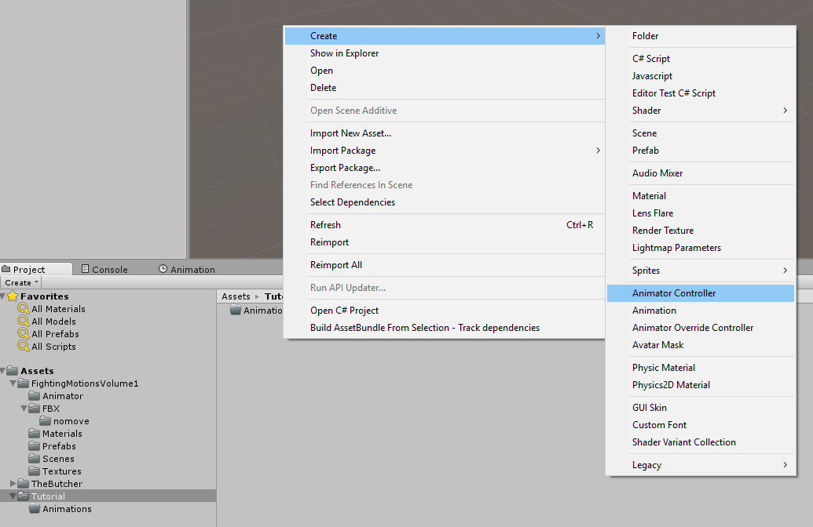
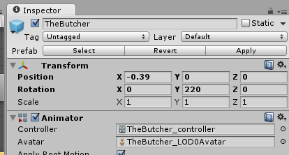

An Animator Controller is a Unity Object that acts like a state machine for animations. That is, it allows us to assign animation clips to it, then set up rules on when those animation clips are allowed to trigger.
In the Tutorial project, right click, go to Create and select Animator Controller.

By default, this will create a "New Animator Controller" object. You can double click, and rename it to whatever you'd like. For this tutorial, we are calling it the TutorialController.
Now The Butcher has been assigned our new Animator Controller, and is ready to learn new animations.
Once created, click on TheButcher under the hierarchy to bring up the Inspector window.

Under the Animator section, click on the circle at the end of the TheButcher_controller, and select the new Animator Controller you created. Once updated, you'll notice that the Clip Count is now 0. That's because we haven't added any animation clips yet.
Created with the Personal Edition of HelpNDoc: Full-featured Kindle eBooks generator